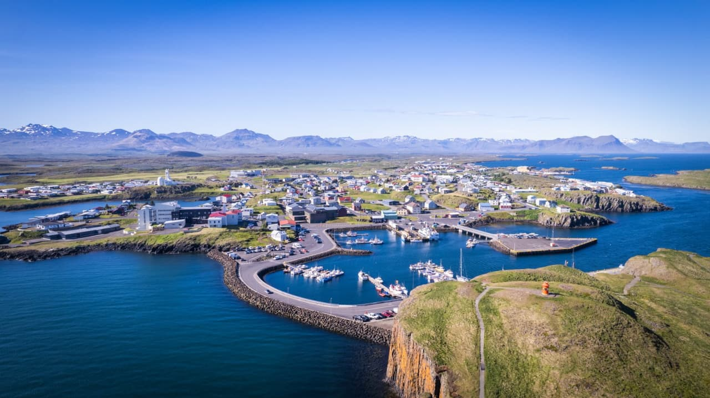
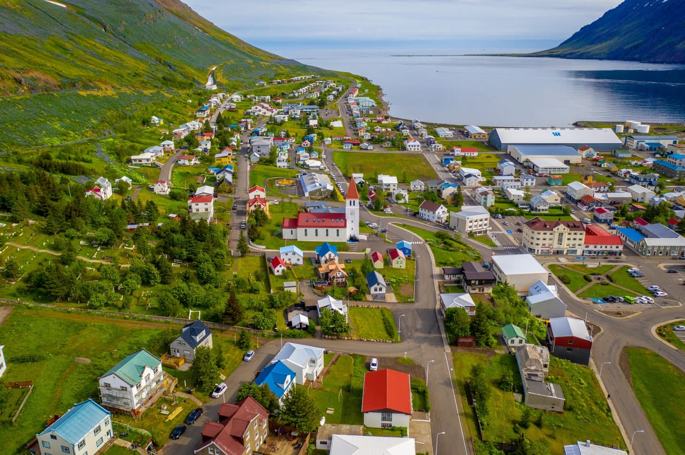

Stykkishólmur
Malé přístavní město s barevnými domky a výhledem na fjordy.

Siglufjörður
Historické rybářské město obklopené horami a mořem.

Vík í Mýrdal
Vesnice známá černými plážemi a dramatickými skalními útvary.